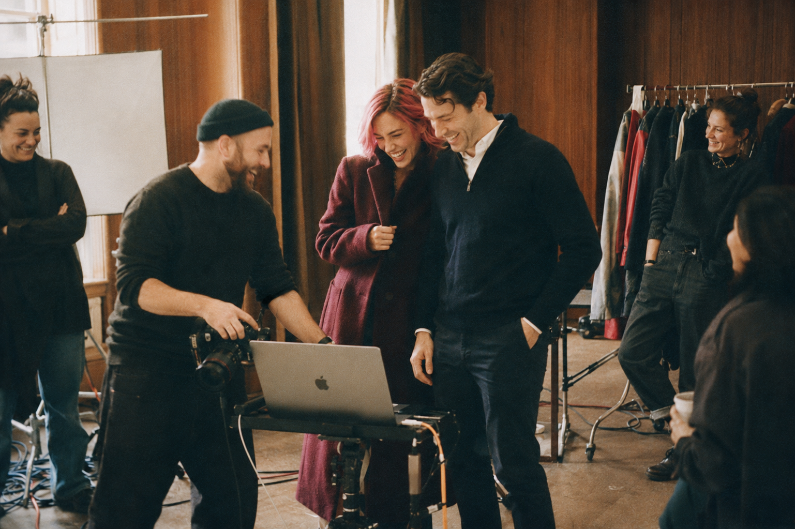
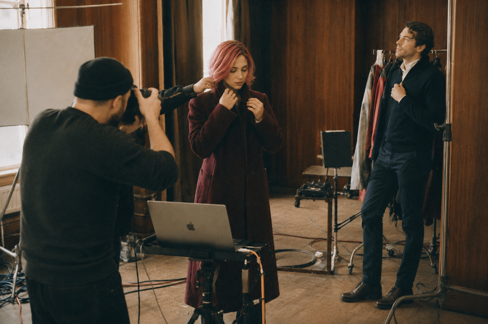

01
00:00:04:12
Préparation
A CAM · TC 04:12
Prompt 01
Behind-the-scenes candid 35mm photograph, centered on the woman with pink-rose bob, fully clothed, finishing her look before a take — sliding her arms into the oxblood high-collar wool coat, a stylist just out of frame adjusting the collar and smoothing a wrinkle at the shoulder. Focused, calm expression, looking down slightly as she buttons the coat. Wood-paneled room, soft window light falling across her face, wardrobe rack with extra garments softly blurred in the background, tethered laptop cart barely visible at the edge of frame. Heavy 35mm film grain, warm faded tones, slight vignette, imperfect candid framing, quiet authentic preparation moment rather than a produced shot.
Le dernier ajustement avant le plan — le geste, pas la pose.
02
00:00:11:28
Pause

A CAM · TC 11:28 Prompt 02Behind-the-scenes candid 35mm photograph, wide shot capturing the full break moment. The woman with pink-rose bob in the oxblood high-collar coat and the man in a navy quarter-zip pullover over a white collared shirt, both mid-laugh, standing close together near the tethered laptop cart. The photographer, camera lowered, also laughing and gesturing toward the screen, sharing the joke. A stylist and an assistant visible at the edges of frame, relaxed postures, one leaning against the wardrobe rack. Wood-paneled room, soft warm window light spilling across the group, cables and light stands scattered on the floor, genuine loose energy. Heavy 35mm film grain, warm faded tones, imperfect candid framing, slight motion blur from movement, authentic joyful in-between moment rather than a produced shot.
Le rire n'était pas prévu au script — c'est justement pour ça qu'on le garde.
03
00:00:15:03
Reprise

A CAM · TC 15:03 Prompt 03Behind-the-scenes candid 35mm photograph, the mood shifting back to focus right after the shared laugh. The woman with pink-rose bob straightening the collar of her oxblood coat, expression settling back into calm concentration, while the man in the navy quarter-zip pullover takes his mark near the wall, adjusting his posture. The photographer raising the camera again, framing the shot, stylist stepping back out of frame with a final touch to the woman's hair. Wood-paneled room, soft warm window light, cables and light stands visible in the background, energy settling from loose to focused. Heavy 35mm film grain, warm faded tones, imperfect candid framing, authentic transitional moment between a break and the next take.
Le silence revient. L'équipe se replace sans qu'on ait besoin de le dire.
04
00:00:18:40
Le Plan
A CAM · TC 18:40
Prompt 04 — Final
Cinematic 35mm film portrait, the finished take following the making-of sequence. Both models fully composed and still, posed together against the dark textured backdrop. The woman with pink-rose bob wearing the oxblood high-collar coat, calm direct gaze toward camera, collar freshly adjusted. Beside her, the man in a navy quarter-zip pullover over a white collared shirt, small embroidered emblem visible at the chest, composed and confident stance. Single warm key light sculpting both faces, deep shadow falling into the dark charcoal-brown backdrop matching the campaign identity. Shot on Kodak Vision3 500T, natural film grain, shallow depth of field, slightly desaturated warm-cool grade, subtle analog imperfections. Composition centered, formal, chest-up framing — the polished result after the candid preparation.
Ce que la coulisse rendait possible : la photo qu'on garde.